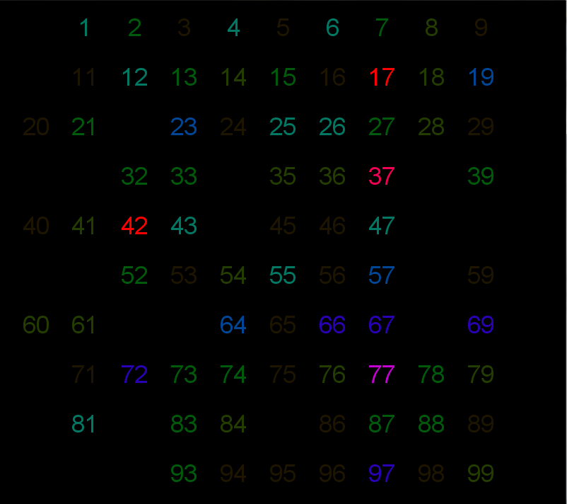

A dataset is a collection of data that has attributes in common. There can be many types of datasets such as Record-Based, Graph-Based, etc. All of these dataset types have their own uses and create the foundation of Data Mining which is the data.
The first dataset type is Record-Based which is the most common and generally consists of Transaction/Market Basket Data in which one attribute includes a set of values. Record-Based datasets are generally stored as data matrices sometimes consisting of sparse data. Another type of dataset is Graph-Based. In a Graph-Based dataset there is a relationship among objects. These relationships are represented by links between nodes that represent the data objects. Sometimes the object attributes are graphs themselves. The next dataset type is Ordered Data. There are many subcategories of Ordered Data such as sequential data (temporal data) where each record has a time associated with it, sequence data which has a position associated with each record but no timestamps, spatial data which is data by location such as weather, and time series data in which each record is a series of measurements taken over time. The last type of dataset is Unstructured Data in which data has no defined structure.
There are also a hand full of different attribute types for the data in these datasets. These attributes fall into two general categories: categorical (qualitative) and Numeric (quantative). The first category, categorical, includes the attribute types nominal and ordinal. Nominal attributes are properties such as zip codes, ID’s, gender, etc. which are more like labels and therefore qualitative. Ordinal attributes include properties such as hardness and grades which are more of a ranked order but still qualitative. The attributes that fall into the Numeric category are: interval which includes attributes such as dates and temperature, and ratio which includes attributes such as age, lengths, money, etc. These dataset types and attribute types are important to think of when defining data. They are important because they help define the type of data and give each set of data a specific purpose and classification.
The side effects of different dataset types include concepts such as temporal autocorrelation and special autocorrelation. With a time series dataset temporal autocorrelation can be applied to data with missing values. This means that if two measurements are close in time, then the values of the measurements are often very similar so they can be determined in this way. Spatial autocorrelation has the same sort of concept except it is based on the proximity of the locations in which the data is collected. These types of side effects are a positive result of having different dataset types.
There are many data quality issues in the world of Data Mining that may or may not be obvious. The quality of data is the essence of the results of analysis. A dataset must be of good quality in order to achieve the most accurate and interesting results. A good dataset consists of a very large amount of data with little data missing and as few data quality issues as possible. Due to the fact that data mining applications are “often applied to data that was collected for another purpose, or the future, but unspecified applications… data mining cannot usually take advantage of the significant benefits of ‘addressing quality issues at the source’”3 which is where many of the data quality issues originate. Because of this lack of prevention, data mining focuses on “the detection and correction of data quality problems and the use of algorithms that can tolerate poor data quality”3 in order to deal with the following data quality issues.
Some of the more common data quality issues are measurement and data collection issues, noise and artifacts in the data, and precision, bias, and accuracy issues. The first issue, measurement and data collection includes the sub-errors of measurement error, error, and data collection error. Measurement error includes any problem resulting from the measurement process. This may be due to human error or instrument error. Error is for continuous attributes; it is the numerical difference of the measured and true value of the data. Lastly, data collection error includes errors such as omitting data objects, attribute values, including data objects that do not belong and keyboard errors. These types of errors are sometimes correctable depending on the domain of the data. In some cases it can be corrected by techniques that have already been developed for detecting this type of error and correcting it with some help from human intervention.
Noise is defined as a random component of measurement error. It may be a distortion of a value in the data or the addition of fake objects. This type of error occurs most often with spatial/temporal datasets and correcting the issue is difficult. The issue is usually handled by using algorithms that are robust against noise to remedy the issue. Artifacts, on the other hand, are deterministic distortions of data and they can be handled by algorithms.
Last but not least precision, bias, and accuracy can cause data quality issues. Precision is the closeness of repeated measurements of the same data to one another. Bias is a variation of measurements from the quantity being used and accuracy is the closeness of measurement to the true value. These affect the quality of the data and can sometimes be handled. A bias can only be determined if the measured quantity is known from an external source and can therefore be corrected.
A few other issues are missing values in the dataset, inconsistent values, and duplicate data. Missing values can be solved with temporal/spatial autocorrelation in some cases, eliminating the data object or attribute, estimating the missing values, or ignoring the missing values during analysis. Inconsistent values are usually easy to detect and can include things like typos. These can be fixed by using other valid data to resolve inconsistencies. Duplicate data can be the same object but with slightly different attributes which can be solved by a process called deduplication which resolves or merges the values.
A good example of data that is highly likely to have data quality issues is human generated data. It is hard to get enough useable data from human generation and the “collection poses specific challenges including accessibility, trust, and user motivation.”1 Beautiful Data 1 goes further into these issues with their case study about getting information from online surveys. Not many people opt in to take these types of surveys and many practices such as keeping the survey short, not asking for personal information to keep the subjects trust, and not asking for data that can be generated, can be applied to the survey to encourage people to take the time to fill it out and provide high quality data. If a survey entails some sort of reward at the end but is too long the person taking it will be more likely to fill in random answers rather than taking the time to answer the questions truthfully which can affect the quality of the data returned. Little adjustments to the data collection process like the ones mentioned can affect data quality immensely and can be used with different applications as well.
Exploring data is an important practice in data mining. Data mining is important because patterns and statistics can be found by exploring the data. Knowing your data can make the difference between finding real patterns in the data and others that may seem real. If the data is not explored and understood before the data mining process begins there may be incorrect assumptions made during data mining that result in false analysis.
The common summary statistics include frequency and mode, percentiles, mean, median, trimmed mean, min, max, range, and variance/std-dev. These are very general statistics about the data that can provide more understanding than just looking at the data. These summary statistics can help the data miner get a better overall understanding of the data at hand. A few other common summary statistics include the absolute average deviation, the mean absolute deviation, and the interquartile range. These common statistics can be easily generated with data mining tools such as Weka and Knime. Screen shots of these statistics generated for the iris dataset are included below.
Screenshot of the summary statistics for the iris dataset generated by Knime
Data visualization is a very powerful tool that allows observers to get a quick overview and understanding of the data being represented. Data can be visualized in many different ways such as the general bar graphs, pie charts, etc. but it can also be visualized in more informative and custom ways, for example a heat map or 3D representation. The reason for visualizing data is because humans have the ability to analyze large amounts of information visually by picking up general, or unusual, patterns and trends in the data and identifying outliers. The goal of a data visualization that is designed to facilitate discovery is to validate a hypothesis about the data, answer a specific question, and identify trends, behaviors and relationships in the data.2 The idea of a beautiful visualization is to give the observer “a fresh look at the data or a format that gives readers a spark of excitement and results in a new level of understanding.”2
Visualizations fit into the end of the data mining process in some cases because the data can be analyzed and trends/patterns can be found and represented in the visualization. On the other hand, visualizations can reveal more about the data and can be created before the data has been fully analyzed. An example of an interesting visualization created using Processing is included below. The data collected for this visualization consists of many people picking a random number. The darker spots on the visualization show numbers more commonly picked. This visualization could have easily been created as a bar graph showing how many people picked what number but instead it is given this new and more interesting to look at representation.
